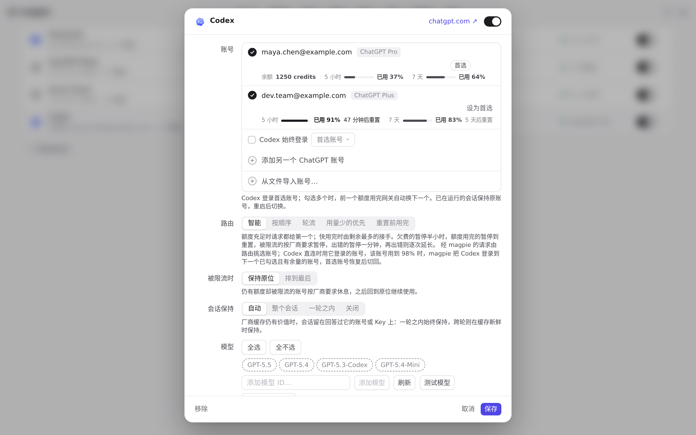
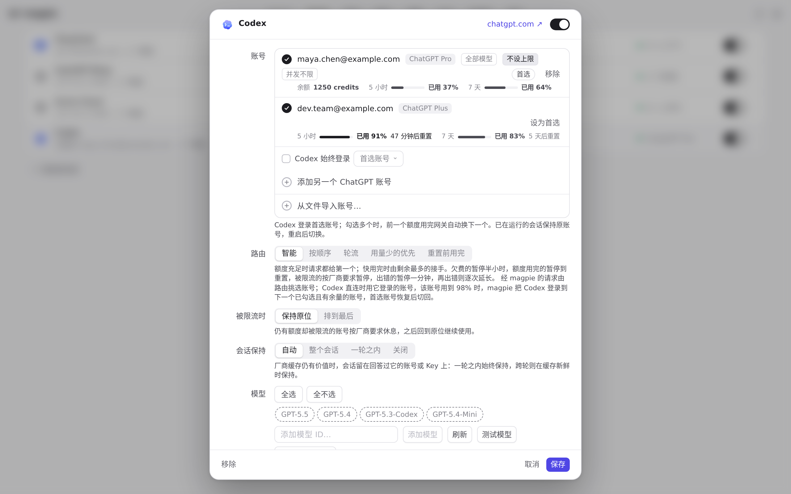

#1300 界面预览
commit 467d53f · 回到 PR · 只改了一处文案：账号「用量上限」胶囊（button.acap）的悬停提示改为「按最近一次读数…」，说明读数约每分钟刷新、窗口可能先超过上限；中文（简/繁）、日文、德文译文同步更新。
红线是鼠标走过的轨迹，红色圆环是一次点击；底部文字是这一步在做什么。空格暂停，← → 逐段查看。

账号用量上限胶囊的提示措辞 · Codex 账号行里的用量上限胶囊

账号用量上限胶囊的提示措辞 · 悬停「用量上限」胶囊后的提示